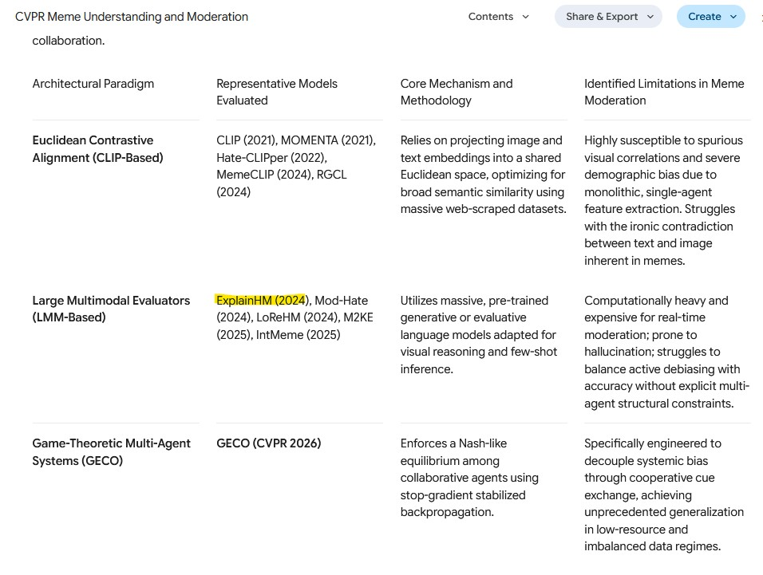
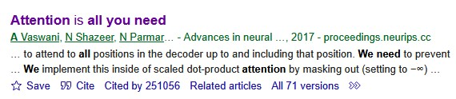

Day 2 — Literature Review
Day 2 is where we map the research landscape around the problem statement: what’s already been done, what the open problems are, and which papers are worth reading closely. I’ll keep going with the illustrative health misinformation brief from Day 1.
Daily Recap
Before we start searching, we revisit yesterday’s problem statement and split the literature hunt across sub-areas. I’ve learned that without this, three of us end up finding the same survey paper while a whole sub-area goes untouched.
For the Singlish health misinformation angle, here’s how I might split it:
| Sub-area | Why it matters to the problem |
|---|---|
| Misinformation / fake-news detection | The core task — what methods exist, what they achieve |
| Code-mixed and low-resource NLP | Directly addresses the Singlish constraint |
| Explainability in text classification | Addresses the explainability requirement from the brief |
Each of us takes a sub-area, and we agree up front to come back with a handful of strong sources rather than a giant undifferentiated list.
Gathering Information
Deep Research features (in ChatGPT, Claude, Gemini, and similar tools) are great for getting a fast first map of a field. I treat them as a starting point, never a substitute for actually reading. Two failure modes have bitten me enough that I always watch for them:
- Hallucinated or mis-attributed citations. A tool may invent a plausible-sounding paper, or pin a real finding on the wrong authors or venue. I verify every source independently before it goes anywhere near my bibliography.
- Confident but shallow synthesis. The summary can smooth over real disagreements in the literature, or miss the most important recent work. I read it as a set of leads to chase, not settled conclusions.
Deep Research with LLMs
Most AI tools these days have some “deep research” feature, so this section is about getting more productive use out of it. A vague prompt (“tell me about misinformation detection”) gets me a vague survey back. What I’ve found works better is a prompt that encodes my problem statement, my constraints, and exactly what I want returned.
I am researching the detection of health misinformation in code-mixed English–Singlish short text (social media posts). I want to understand the existing research landscape.
Please find and summarise:
- Key approaches to health misinformation / fake-news detection in short text, with a focus on explainable methods.
- Work on code-mixed or low-resource NLP, especially for English mixed with Southeast Asian languages.
- For each work: the venue, the year, the core method, and its main limitation.
Prioritise peer-reviewed papers from reputable venues (e.g., ACL, EMNLP, NAACL, ICML, ICLR). Include links or DOIs so I can verify each source. Flag where the evidence is thin or where you are uncertain.
Notice what that prompt is doing: it states the problem precisely, names the constraints (code-mixed, explainable, short text), asks for verifiable metadata (venue, year, link), and openly invites the tool to flag its own uncertainty.
Don’t trust the models (for now)
Below is an example of a hallucinated reference produced by Deep Research (02/Jun/2026).

Be very, very careful with the papers it lists. The model can not only hallucinate a paper that doesn’t exist, but also get where it was published wrong! In other cases the paper might just be sitting on arXiv, not actually published yet. To feel confident in our sources, we go and verify them ourselves.
Triaging the output
Say the tool hands me eight sources. The real skill is deciding what to read first and what to set aside — and being able to explain why. Here’s roughly how I triage:
- Read first — a paper from a top venue (e.g., ACL/EMNLP), recent (last 2–3 years), directly on code-mixed misinformation. High relevance, high credibility: this is the closest prior work.
- Read soon — a well-cited survey of explainable text classification. Not specific to my domain, but it frames the explainability landscape and its references are a map to follow.
- Skim / park — a paper on misinformation detection from a strong venue but English-only and not explainable. Useful as a baseline method, but it misses two of my core constraints.
- Filter out — a source with no identifiable venue, no link, or one I can’t locate when I search for it. If I can’t confirm it exists, it doesn’t enter the bibliography.
The reason I make myself say the why out loud is that it forces my criteria into the open: relevance to the problem statement, credibility of the venue, recency, and whether the work actually addresses my specific constraints.
Using your EROP problem statement, write a Deep Research prompt in the spirit of the one above. Run it, then triage the results into “read first / read soon / skim / filter out.” For each source you flag for the team, jot one sentence on why it earned that ranking.
Google Scholar
Deep Research gives me leads; Google Scholar is where I check them and follow the citation trail myself. My first move with any AI-suggested source is always the same: find the real paper. I search the exact title in Google Scholar and confirm the authors, venue, and year match what the tool claimed.

Practical Tips!
- “Cited by N” — every result lists how many later papers cite it. Clicking through shows me forward citations: newer work that built on this paper. It’s the single most useful way I know to get from a foundational paper to the current state of the art.
- “Related articles” — surfaces papers Scholar judges topically similar; handy for widening a sub-area. Connected Papers is another tool I reach for here.
- Cite → BibTeX — exports a clean citation for the bibliography (I still sanity-check the venue and year).
- Filter by year (left sidebar) — I restrict to recent work to see where a field is now, or sort differently to surface the seminal older papers.
- The right-hand link — often a
[PDF]from the publisher, arXiv, or an author’s page, which gets me to the full text.
I treat citation count as a signal of influence, but it’s biased toward older papers — a strong 2024 paper won’t have many citations yet. So I weigh the venue (is it a recognised peer-reviewed conference or journal?), the recency, and above all the fit to my problem. A modestly-cited paper that hits my exact sub-problem is often worth more to me than a famous paper that’s only loosely related.
Synthesizing findings
What I want at the end of this session isn’t a pile of PDFs — it’s a small set of synthesised points that connect back to the problem statement. Three kinds I find useful:
- Existing work — “Approach X is the standard method for short-text misinformation detection, achieving Y on benchmark Z.”
- A limitation or gap — “These models are trained and evaluated almost entirely on monolingual English; code-mixed performance is largely unstudied.”
- A convention of the subfield — “Explainability here is usually evaluated by attention-weight visualisation or token-attribution methods, which have known reliability caveats.”
I make sure each point traces back to a specific source, so the claim can be checked.
Bibliographies
The artifact for the day is an annotated bibliography. The annotations I find most useful are short, but they capture relevance and judgement, not just a summary:
Author(s) (Year). Title. Venue. [link/DOI]
- What it does: proposes a transformer-based classifier for short-text misinformation with token-level attribution for explainability.
- Why it’s relevant: hits two of our constraints (short text + explainability); a strong candidate baseline.
- Limitation for us: English-only; no evaluation on code-mixed text, which is exactly our gap.
- Follow-ups (via “Cited by”): two 2024 papers extend this to multilingual settings — worth reading next.
Take one source you flagged from your Deep Research survey. Find it on Google Scholar, confirm its venue and year, and click “Cited by” to find a more recent paper that builds on it. Write an annotated bibliography entry for each, in the spirit of the one above. Then, as a team, pool everyone’s entries and pick out the three synthesised points most relevant to your problem statement.
Checkpoint Deliverable: Day 2
At the end of Day 2, the mentees should have a stronger problem statement supported by reputable sources from the papers they have read today. The problem statement document should be cited properly and must have valid bibliographies.